Objeto Canvas
Canvas se trata de un elemento HTML el cual se encuentra estrechamente relacionado con JavaScript; esto ya que literalmente este elemento requiere de código JavaScript para funcionar. Este elemento se utiliza para generar todo tipo de gráficos, animaciones, composiciones de fotos, publicidades, juegos, entre otras funcionalidades.
En sí el funcionamiento de canvas se basa en delegar ciertas tareas de generación de gráficos al GPU del equipo, de ese modo los equipos modernos permiten optimizar recursos y tiempo.
En otras palabras, "canvas" se trata de un elemento HTML el cual permite asignar códigos JavaScript al GPU. Esto ya que en equipos modernos este se trata de un componente que permite realizar todo tipo de cálculos relacionados con los gráficos de una forma mucho más óptima de lo que se podría hacer con el procesador del equipo.
Por lo tanto, "canvas" es un elemento que permite asignar tareas de procesamiento al GPU para que de ese modo no todos los cálculos recaigan en el procesador, reduciendo en gran medida los tiempos de carga de animaciones, gráficos, juegos, fotos, etc.
Ejemplo
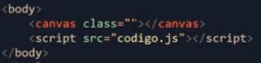
Una característica particular de este elemento radica en que por defecto "canvas" posee unas dimensiones de 300px de ancho (width) y un alto de 150px (height). Estas dimensiones se pueden modificar desde CSS, sin embargo esto no es recomendable ya que de ese modo se cambiará la escala de los elementos generados en este, caso para el cual sería necesario emplear un "método de escala".
Ejemplo
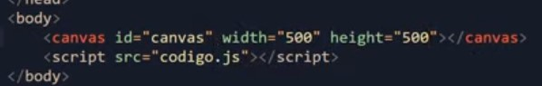
Por ello este es de los pocos, si es que no el único elemento en el que lo más recomendable es asignar las dimensiones de este directamente desde HTML usando las propiedades "width" y "height", para que de ese modo las dimensiones de los elementos generados no se vean alteradas.
Canvas con JavaScript
La inclusión del JavaScript es bastante simple, ya que se basa en obtener el elemento "canvas" como a cualquier otro elemento HTML, más un paso extra el cual es añadir el "contexto". El contexto se refiere a la tecnología utilizada para generar el elemento en cuestión; estas tecnologías pueden ser definidas como "2d" o "3d".
Ejemplo
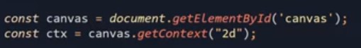
A partir de este punto todos los métodos empleados para construir los elementos se aplican al "contexto", no al canvas, esto ya que estos son construidos sobre el contexto, no sobre el elemento canvas en sí.
Métodos Básicos
El objeto "canvas" posee multitud de métodos para poder estructurar cualquier tipo de elementos dentro de este. Los más básicos e indispensables son:
-
.strokeRect( )
Este método permite generar y posicionar una cuadrícula hueca, para lo cual recibe cuatro tipos de datos:
El primer dato corresponde al margen "left" respecto al borde del canvas.
Este segundo dato corresponde al margen "top" respecto al borde del canvas.
El tercer dato corresponde al ancho (width) del elemento expresado en píxeles.
El cuarto dato corresponde al alto (height) del elemento expresado en píxeles.
Ejemplo
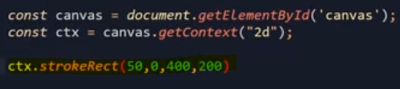
Resultado
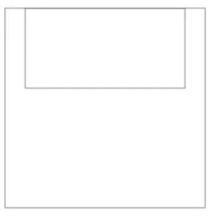
-
.fillRect( )
Este método es exactamente igual al anterior, con la diferencia de que la cuadrícula se encuentra rellena.
Ejemplo
Resultado
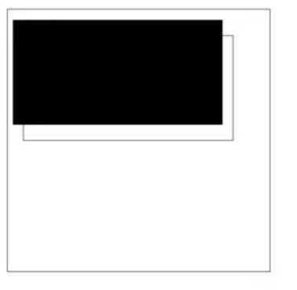
-
.strokeStyle( )
Se trata de un método que permite modificar el color empleado en los elementos generados por "strokeRect".
Ejemplo
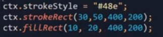
Resultado
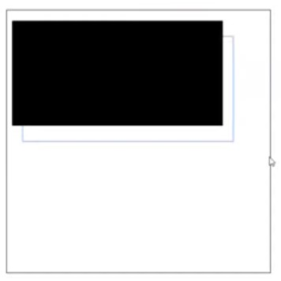
Nota: Este método debe ser incorporado antes de "strokeRect", es decir, debe aplicarse antes de ser generado el rectángulo.
-
.fillStyle( )
Se trata de un método que permite modificar el color empleado en los elementos generados por "fillRect".
Ejemplo
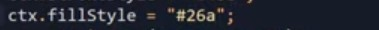
Resultado
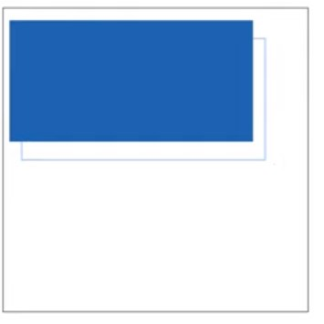
Nota: Este método debe ser incorporado antes de "fillRect", es decir, debe aplicarse antes de ser generado el rectángulo.
-
lineWidth
Este método permite definir el grosor de las líneas.
Ejemplo
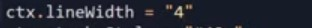
Resultado
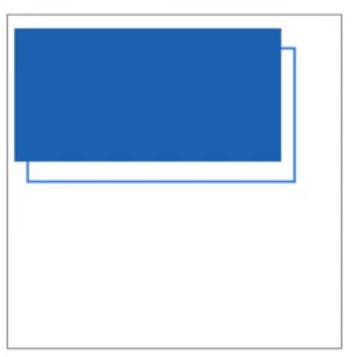
-
Líneas en Canvas
Las líneas, al tratarse de un elemento de diseño tan versátil, cuentan con múltiples métodos para desarrollar líneas de diversas características.
"lineTo" permite definir la ubicación de los puntos de inicio y final de la línea, para lo cual se le añaden dos valores referentes a la posición del punto en el eje X y eje Y.
"stroke" por su parte es el método encargado de generar la línea en sí, la cual parte y culmina en los puntos marcados por "lineTo".
Ejemplo
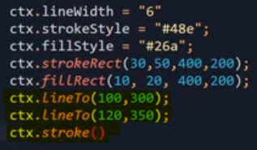
Resultado
"lineTo" permite generar cualquier cantidad de puntos los cuales pueden ser unidos por "stroke".
Ejemplo
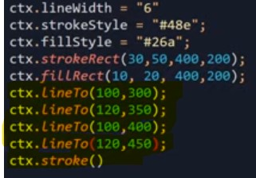
Resultado
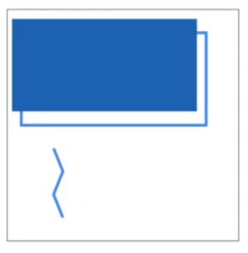
"closePath" para indicar el cierre de la línea. De ese modo, si más adelante se inicia una línea nueva, los puntos indicados para esta no se vincularán erróneamente con los de la línea actual.
Ejemplo
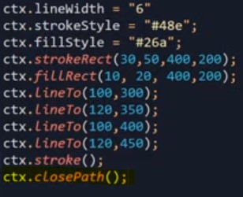
Por último se añade el método "beginPath", el cual indica que los siguientes puntos pertenecen a una nueva línea independiente a la anterior. De lo contrario, esta nueva línea se unirá a la anterior, aun si se usa "closePath".
Nota: El elemento "canvas" no funciona con elementos SVG, sino que en su lugar lo hace en base a píxeles, por ello son susceptibles a las dimensiones de la pantalla del dispositivo.